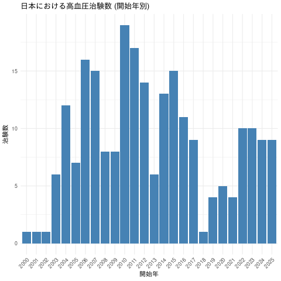

ShinyとLLMでClinicalTrials.govを分析するツールを作ってみた
Tomoki Nishikawa
January 28, 2026
ClinicalTrials.gov (CT.gov) とは？
- 世界最大の治験情報データベース
- 治験の概要、デザイン、結果、文献リンク 他いろいろ
- 「他社の薬剤開発状況」「世界のトレンド」などを調べるのに便利
CT.gov の活用イメージ
「社長、最近○○がアツいらしいですよ」
- 他社の動きや開発トレンドをキャッチ
- 市場調査や戦略立案に役立つ
でも、検索や集計はちょっと面倒
ちょっと面倒
- ウェブUIは検索条件が限られる
- 大量のデータをダウンロードしてエクセルで集計するのは大変
- 直接データベースを操作できれば楽だけど、書ける人が限られる
自然言語で検索・分析できたらうれしい
- 「日本で進行中の高血圧治療薬の治験を一覧して」
- 「近年増えてるがん免疫治療をグラフで見せて」
→ SQLやRを書かずに、チャットでお話ししながら分析したい
Aggregate Analysis of ClinicalTrials.gov (AACT) とは？
- CT.govの情報をPostgreSQL形式で公開しているサービス
- Sign upから無料で利用可能
- SQLを叩いてCT.govを検索できる！
AACTのスキーマ

ということは
- AACTを使うにはSQLクエリを書く必要
- 自然言語→SQL変換 すればいいのでは
- ついでに、分析にはRを使いたい
- 自然言語→Rコード変換 もできれば最高
LLMとShinyの出番！
実現するためのRパッケージとLLMのAPI
ellmer: RでLLMを動かすshinychat: ShinyでLLMとのチャットUIを簡単に実装Gemini: Googleアカウントがあれば無料でAPIが使える！
GitHub Copilotを使った実装の流れ
自然言語で指示 → AIが実装 → 修正を繰り返す
Step 1: 要件定義書の作成
まずは「何を作りたいか」を言葉で伝える
要件定義の例
🗣️ GitHub Copilotへの指示
ClinicalTrials.govの情報をSQLクエリで取得できるAACTというサービスがある。
これとshinychatを使って、自然言語を入力したらそれに合った情報を抽出するSQLクエリを実行して返し、必要に応じてRで処理・可視化するアプリを作って。
使用するAPIをGeminiに変更して。
→ Copilotが要件定義書を生成してくれる
Step 2: 要件定義に基づいて実装
🗣️ 次の指示
この要件定義に従って実装して
- Copilotが必要なファイルを生成
app.R: Shinyアプリ本体server.R: サーバーロジックui.R: UIコンポーネント
Step 3: エラーや意図と異なる点を修正
実行してみると…
- ❌ データベース接続エラー
- ❌ SQLクエリの実行結果が表示されない
- ❌ グラフの見た目がイマイチ
🗣️ 修正の指示
データベース接続でエラーが出る。環境変数から認証情報を読み込むように変更して
GitHub Copilotの強み
従来の開発
- ドキュメントを読む
- コードを書く
- デバッグする
- 繰り返し…
Copilotを使った開発
- 自然言語で指示
- AIが実装
- 対話的に修正
- 完成！
作成したツール
ツールの動き方のイメージ
- ShinyでチャットUIを提供
- 入力された自然言語をもとにLLMがSQL/Rコードを生成
- 生成されたSQL/Rコードを実行し、分析・可視化結果を返す
自然言語からSQL/Rコード生成の例 (1/2)
🗣️ユーザーの入力
日本で実施された高血圧の治験を期間別にカウントして
🤖 LLMの出力
承知いたしました。日本で開始された高血圧の臨床試験を、開始年別に集計するSQLクエリを実行します。
SELECT
EXTRACT(YEAR FROM s.start_date) AS start_year,
COUNT(s.nct_id) AS study_count
FROM studies s
JOIN conditions c ON s.nct_id = c.nct_id
JOIN countries co ON s.nct_id = co.nct_id
WHERE c.downcase_name ILIKE '%hypertension%'
AND co.name = 'Japan'
AND co.removed = false
GROUP BY start_year
ORDER BY start_year;自然言語からSQL/Rコード生成の例 (2/2)
🗣️ユーザーの入力: 開始年別の治験数の棒グラフを作成して
🤖 LLMの出力: 承知いたしました。

👍
Geminiに与えたシステムプロンプト
こんなことをGeminiに伝えました
- 目的: 治験データの検索・分析・可視化を支援
- 環境: AACT接続、SQL/Rコードが実行可能であること
- 動作方針
- 小さなステップで進め、都度説明を添える
ggplot2を用いて一貫した可視化を行う- SQLは ILIKE 検索・nct_id 結合を基本とし、実行結果は即時表示
- セキュリティ上、ローカルファイルや外部操作は実行しない
- AACTの主なデータ構造
- 分析・可視化の例
開発・デプロイまで全部無料
- GitHub Copilot: VS Codeでコード補完とvibe coding
- 学生はPro版も無料 (今回 Claude Sonnet 4.5 を使いました)
- Posit Connect Cloud: Shinyアプリをデプロイ可能
- 無料プランでRAM 4GB
まとめ
LLMでデータ分析が変わる
- Shiny の中に LLM を組み込むのは簡単
- チャットで指示して抽出・分析・可視化ができちゃう
- Shiny自体も簡単に作成可能
LLM × Shiny = 👍
Enjoy 😊
大阪SAS勉強会#12